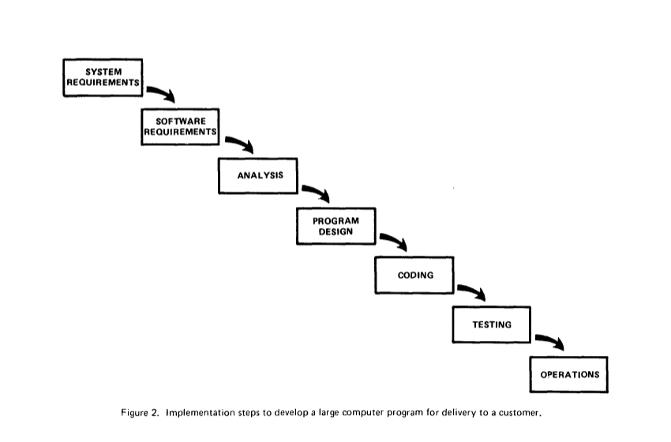

Agile
гибкие методологии разработки
История
| — 1950 : |
возникновение
|
| — 1960 : |
выход в свет
|
| — 1970 : |
десятилетие хаоса
|
История
| — 1980 : |
возрождение
|
| — 1990 : |
совершенствование
|
| — 2000 : |
развитие
|
История
| — 2010 : |
кооперация
|
Каскадная модель
(Традиционная, или модель Водопад, Waterfall)
- 1970 - Уинстон Ройс
"Управление разработкой крупных программных систем" - 70е - 80е - стандарт министерства обороны США
Каскадная модель
Каскадная модель
Минусы
- Возвращение на предыдущий этап не предусмотрено
- Чем больше проект тем больше накапливается проблем в процессе разработки
- При появлении критических ошибок весь проект начинается сначала
Каскадная модель
Плюсы
- Строгие требования и высокая степень формализации
- Дисциплиннированность
"пишем и правим" - 1. Понимание целей
2. Реализация продукта
Спиральная модель
(Spiral model)
- 1988 - Барри Боэм
"Спиральная модель разработки и улучшения ПО"
Спиральная модель
Спиральная модель
- Каждая фаза водопадного процесса разработки в спиральной методологии завершается этапом прототипирования и управления рисками.
- Этап прототипирования после каждой фазы проекта позволяет определить, насколько текущее состояние проекта соответствует первоначальному плану.
- По итогам прототипирования выполняется либо переход к следующей фазе, либо возвращение на одну из предыдущих фаз.
Спиральная модель
Плюсы
- Стабильность архитектуры
- Большие, дорогостоящие и сложные проекты
Спиральная модель
Минусы
- Определение момента перехода на следующий этап
Итеративная модель
(Iterative and incremental development, IID)
- Истоки — 1930е года
- Принцип разделения на итерации
- Каждая итерация — мини-проект
- Важная веха — проект по разработке самолета X-15
Итеративная модель
Плюсы
- Ранняя обратная связь
- Возможность "отката"
Итеративная модель
Минусы
- Отсутствие долгое время целостного понимания возможностей и ограничений проекта
- Часть работы неизбежно приходится отбрасывать
- Снижение добросовестности и дисциплины
Гибкие методологии
- Принцип разделения на итерации
- Человеческий фактор
- Конечный продукт
Agile-манифест
| Люди и взаимодействие | важнее | процессов и инструментов |
| Работающий продукт | важнее | исчерпывающей документации |
| Сотрудничество с заказчиком | важнее | согласования условий контракта |
| Готовность к изменениям | важнее | следования первоначальному плану |
agilemanifesto.org
Визуализация ценностей
манифеста гибкой разработки
Гибкие методологии
Термин Agile
- Мартин Фаулер - сомнения по произношению
Agile: произношение
sozoexchange.com : AGILE - DP208
Гибкие методологии
Экстремальное программирование
(Extreme Programming, XP)
Канбан (Kanban, 看板)

- Визуализируйте производственный процесс
- Ограничивайте количество незавершенной работы
- Оптимизируйте процесс
Скрам
Скрам
- Хиротака Такэути и Икудзиро Нонака
статья The New Product Development Game - Небольшие команды из специалистов различного профиля
- Scrum - толкотня, схватка вокруг мяча в регби
Скрам: драка за мяч в регби
Регби, Кубок Европейских наций, России - Грузия, 23 февраля 2013
Скрам: основатели
Джеф Сазерленд и Кен Швабер
Скрам: выход в свет
- 1995 - Объектно-ориентированное программирование, системы, языки и приложения. (OOPSLA '95) Остин, штат Техас
- 2001 - «Гибкая разработка ПО со Скрам», Кен Швабер и Майк Бидл
- Официальное «Руководство по Скраму» - scrum.org
Скрам: одной фразой
Скрам - это подход для разработки и поддержки функционально сложных продуктов
Скрам: ещё одной фразой
Скрам - это фрэймворк для управления творческими командами для создания продукта наивысшего качества
Скрам: одной схемой
Элементы скрам
Скрам Команда
- Владелец Продукта (Product Owner)
человек, отвечающий за комплектацию спринтов и за приоретизацию задач - Команда Разработчиков (Development Team)
люди, непосредственно реализующие инкремент спринта - Скрам Мастер (Scrum Master)
слуга-лидер для Скрам Команды
Артефакты
- Журнал Продукта (Product Backlog)
список требований, по выполнении которых разработка продукта будет считаться завершенной - Журнал Спринта (Sprint Backlog)
часть беклога продукта отобранная для спринта - Инкремент продукта (Increment)
новая функциональность продукта, созданная во время спринта
Мероприятия
- Спринт (Sprint)
одна полная итерация процесса разработки - Планирование Спринта (Sprint Planning)
отбор задач на спринт - Ежедневные Скрамы (Daily Scrum)
ежедневная планерка для всей команды - Обзор Спринта (Sprint Review)
встреча в конце спринта для показа владельцу функционала продукта, сделанного за спринт - Ретроспектива Спринта (Sprint Retrospective)
обсуждение результатов спринта
Скрам Команда
Владелец Продукта
- Один человек
- Определяет требования к продукту, знает, каким он должен быть в итоге
- Определяет дату релиза
- Корректирует приоритеты на каждой итерации
- Принимает работу
Владелец Продукта
- Четкое определение элементов Журнала Продукта
- Упорядочение элементов Журнала Продукта для оптимизации достижения целей и поставленных задач
- Обеспечение доступности, прозрачности и понятности Журнала Продукта
- Ответственность за понимание Командой Разработчиков требований Журнала Продукта на надлежащем уровне
Команда Разработчиков
- Самоуправляемы
- Кроссфункциональны
- Одна должность - Разработчик
- Ответственность лежит на всей Команде Разработчиков
- У Команды Разработчиков нет структурных подразделений
Команда Разработчиков
Размер
| простота в управлении | vs | выполнение большого объёма работы |
от 5 до 9 человек
Скрам Мастер
- Понимание Скрама всеми участниками
- Понимает и практикует гибкие методы разработки и управления
- При необходимости проводит мероприятия Скрама
- Планирование и запуск Спринта
- Обзор и ретроспектива Спринта
- Мониторинг социальных аспектов команды и поддержание командного духа
Мероприятия
Спринт
- Скрам проекты развиваются сериями "спринтов"
- Типичная продолжительность – от 2 до 4 недель с жестким ограничением по времени
- Постоянная продолжительность спринта привносит ритм в разработку
- Продукт проектируется, разрабатывается и тестируется на протяжении одного спринта
Спринт: параллельная разработка
Никаких изменений в течении спринта
- Планируйте длительность спринта исходя из соображения о том, как долго вы можете работать, не внося изменения в план работ
Планирование спринта
- Команда выбирает из Бэклога Продукта требования, которые они могут реализовать за спринт
- Создается Бэклог Спринта
- Задачи идентифицируются и оцениваются (1-16 часов)
- Все делается командой, а не Скрам Мастером
- Учитывается высокоуровневая архитектура приложения
Ежедневный скрам
- Характеристики
- Ежедневно
- 15 минут
- Стоя
- Не для решения проблем
- Приглашены все желающие
- Только участники команды могут говорить (владелец продукта - тоже часть команды)
- Скрам Мастер лишь ведет собрание
Каждый отвечает на три вопроса
- Это НЕ статусный отчет Скрам Мастеру
- Это обязательства перед коллегами
Обзор Спринта
- Команда представляет, что было сделано за спринт
- Фокус на результат, а не процесс
- Обычно принимает форму демонстрации
- Неформально
- Максимум 2 часа на подготовку
- Без слайдов
- Вся команда участвует
- Приглашены все, кому может быть интересно
Обзор Спринта: обратная связь
Ретроспектива
- Периодический пересмотр того, что работает, а что нет
- Обычно 15-30 минут
- После каждого спринта
- Участвует вся команда
- Можно пригласить Владельца Продукта
Структура ретроспективы

Каждый отвечает на три вопроса
- Что было сделано хорошо?
- Что можно улучшить?
- Какие улучшения будем делать?
- Основное правило
«В независимости от того, что удастся выяснить в результате ретроспективы, каждый член команды сделал всё, чтобы добиться успеха»
Артефакты
Артефакты
Журнал продукта
- Список требований
оформляются в виде историй пользователя- Уникальный числовой идентификатор истории
- Название истории пользователя
- Важность
- Оценка (сторипоинты)
Журнал продукта: планирование
- Конфликт при выборе размера Журнала Продукта
Метод накатывающей волны
«rolling wave planning»
- Большие куски функциональности,
в дальнейшем будут разбиты на маленькие - Называются «эпиками» («epic»)
Как определить какое количество сторипоинтов назначить истории пользователя?
Покер-планирование
- Покер-планирование (Planning poker) – консенсусная относительная оценка историй пользователей командой
Покер-планирование
- Выбор эталонной задачи в 1 сторипоинт
- простая и понятная для команды
- типичная для данного проекта
- небольшого размера
- Для оценки используется
дискретная логарифмическая шкала
Покер-планирование: раунд 1
- Важно:
- понимание сути истории каждым участником
- отсутствие давления
Покер-планирование: раунд N
- Начинают обсуждение обычно с крайних оценок
- Срам Мастер следит за временем
Покер-планирование: консенсус
- Сглаживаются разногласия
- Владелец продукта начинает понимать процесс работы над задачей
- Команда точнее и детальнее понимает суть задачи
Покер-планирование: расклад
Как осуществляется мониторинг прогресса?
Диаграмма сгорания
(Sprint burndown chart)
Доска задач
- все истории находятся в первом столбце
- отсортированны вертикально по важности
Доска задач
- Команда делает задачи по важности,
начиная с самых верхних,
доводя их до статуса «Готово»
Доска задач
- Вид диаграммы в конце спринта,
если удалось реализовать все истории
Доска задач
- Достаточно большие истории в отдельном столбце
- Истории разбиваются на небольшие задачи
ООО Смартек, Тула, 2013